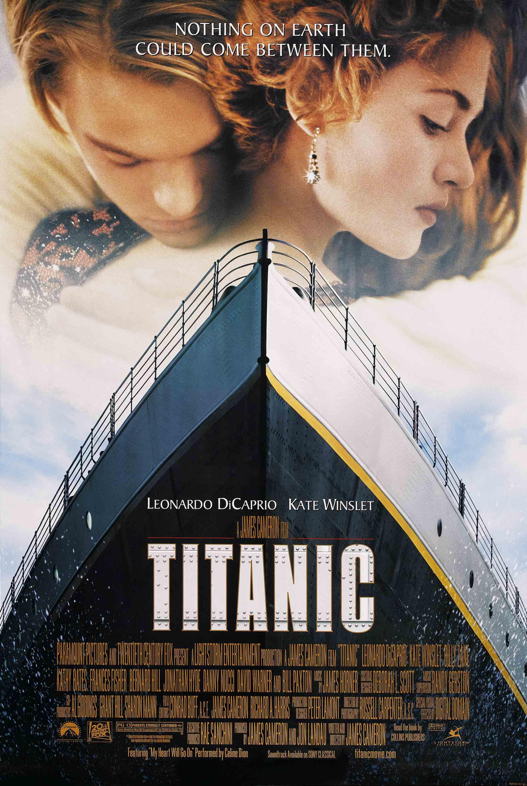

泰坦尼克号（Titanic，1997）
一句话短评：
内容简介：
- 1912年4月10日，号称 “世界工业史上的奇迹”的豪华客轮泰坦尼克号开始了自己的处女航，从英国的南安普顿出发驶往美国纽约。富家少女罗丝（凯特•温丝莱特）与母亲及未婚夫卡尔坐上了头等舱；另一边，放荡不羁的少年画家杰克（莱昂纳多·迪卡普里奥）也在码头的一场赌博中赢得了下等舱的船票。
- 罗丝厌倦了上流社会虚伪的生活，不愿嫁给卡尔，打算投海自尽，被杰克救起。很快，美丽活泼的罗丝与英俊开朗的杰克相爱，杰克带罗丝参加下等舱的舞会、为她画像，二人的感情逐渐升温。
- 1912年4月14日，星期天晚上，一个风平浪静的夜晚。泰坦尼克号撞上了冰山，“永不沉没的”泰坦尼克号面临沉船的命运，罗丝和杰克刚萌芽的爱情也将经历生死的考验。
短评：
- 1.那对对死无所畏惧的老夫妇，那个不为外界干扰的乐队，那个为生而做一次假父亲的男人，那个为爱人吹响口哨的女人。都是为了一种心灵上的执着。 ——个篱
- 2.生死两茫茫 不思量 自难忘 ——高歌
可播放资源：
- 爱奇艺视频VIP免费观看
- https://www.iqiyi.com/v_19rrny4w8w.html?vfm=m_331_dbdy&fv=4904d94982104144a1548dd9040df241